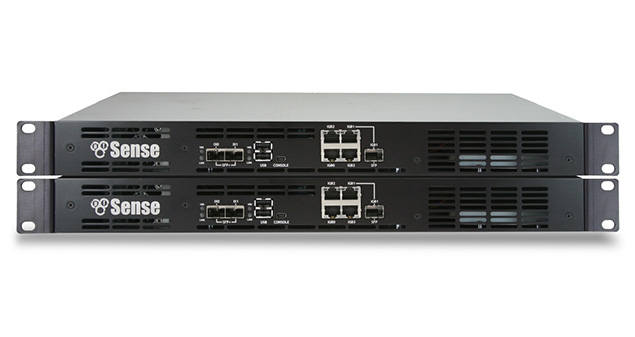
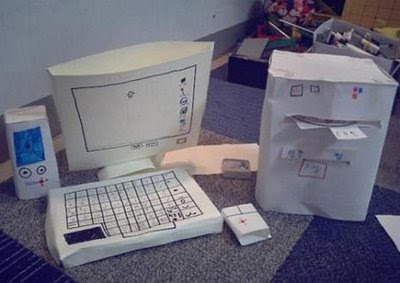

Já me aventurei em muitas coisas tecnologicamente apenas por gostar, instalei um servidor em casa, junto com o firewall/roteador "caseiro" que eu montei usando PFSense e umas placas de rede, já brinquei e destrui alguns raspberry's pi, durante a adolescencia dedicava boa parte do tempo para aprender e programar um "servidor" de GTA San Andreas.
Sempre fui fascinado por computadores, meu primeiro fui um montado por mim aos 8-9 anos, era um belo pc de papelão, copia do computador usado pelos adultos na empresa da família, na verdade era melhor, tinha uma tela fina, enquanto o de verdade ainda usava monitor de tubo.
